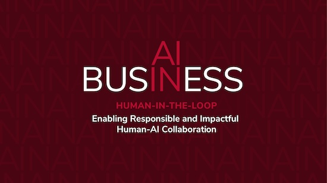

2025 AI in Business Conference
Fisher College of Business at The Ohio State University
Complete Schedule
Full conference schedule by day
Keynotes & Opening
Presentation Sessions
Breaks
Meals
Social Events
Thursday, October 2, 2025
7:00 AM – 8:00 AM
Breakfast
Blackwell Inn Ballroom
7:00 AM – 8:00 AM
Registration
Blackwell Inn Foyer
8:00 AM – 8:15 AM
Opening Remarks – Provost of The Ohio State University
Blackwell Inn Ballroom
8:15 AM – 9:00 AM
Academic Keynote - Anindya Ghose
Blackwell Inn Ballroom
9:00 AM - 9:10 AM
Break
Move to Pfahl Hall
9:10 AM – 10:30 AM
Presentation Session 1
Pfahl Hall Rooms 140, 202, and 240
Room 140: Human-in-the-Loop AI
- A Human-in-the-Loop AI Agent for Meta-Analysis Coding
Hanyi Min* (University of Illinois Urbana-Champaign), Sohee Kim (University of Illinois Urbana-Champaign), Feng Guo (University of Tennessee at Chattanooga) - Amplifying Human Capacity: Institutionalizing Human-in-the-Loop AI at a Land Grant University
Mark Stone* (University of Nebraska-Lincoln/ Agricultural Economics) - Qualitative Coding with Hybrid AI and Human-in-the-Loop
Christina Dressel* (John Glenn College of Public Affairs, The Ohio State University), Megan LePere-Schloop (The Ohio State University), Lucia Gomez Teijeiro (Bern University of Applied Sciences and University of Geneva) - Ethics by Co-Design: Embedding Responsibility in Human-in-the-Loop AI Systems
Jordan Etsio* (University of the Cumberlands)
Room 202: AI in Healthcare & Learning
- AI-Assisted Triage of Patient Messages: A Clinically Calibrated Human–AI Framework for Healthcare Operations
Mohamed Megahed* (The Ohio State University), Nathan Craig (The Ohio State University), Aravind Chandrasekaran (The Ohio State University) - Dual Applications of Large Language Models: Specialty Triage and Patient-Friendly Discharge Summaries
Xiguang Liu* (University of Florida), Haocheng Ren (University of Michigan), Tianrun Pan (Hackensack Meridian School of Medicine), Tianhe Zhang (University of Wisconsin-Madison), Liangfei Qiu (University of Florida) - From Copy-Paste to Cognitive Lift: A Design Theory for AI-Assisted Mastery
Lori Kendall* (The Ohio State University) - Improving Student Engagement and Personalized Learning In Business Analytics with AI
John Draper* (The Ohio State University), Ismael Talke (The Ohio State University)
Room 240: AI in Services & Interaction
- Does Machine Learning Help Flights Depart on Time? The Value of Machine Learning Tools on Airlines' Operational Performance
Rang Gong* (The Ohio State University), Xiang (Sean) Wan (The Ohio State University) - Does Objective Service Quality Guarantee Subjective Service Quality? An AI Application of Facial Recognition on Flight On-Time Performance and Passenger Sentiment
Xiang (Sean) Wan* (Fisher College of Business), Hongshuang (Alice) Li (Fisher College of Business), Zenan Zhou (W. P. Carey School of Business) - Information-Seeking from AI Chatbots: Tradeoff between Judgment and Misinformation Concerns under Stigma
Aravinda Garimella* (University of Illinois Urbana-Champaign), Behnaz Bojd (University of California, Irvine), Haonan Yin (University of California, Irvine) - Leadership in the Loop: Business Roles in Responsible AI Innovation
Shixian Xie* (Carnegie Mellon University), John Zimmerman (Carnegie Mellon University), Motahhare Eslami (Carnegie Mellon University)
10:30 AM - 10:40 AM
Break
Pfahl Hall Foyer
10:40 AM – 12:00 PM
Presentation Session 2
Pfahl Hall Rooms 140, 202, and 240
Room 140: Logistics, Procurement & Markets
- Generative Agent-Based Modeling for Logistics and Supply Chain Management Research
Vince Castillo* (The Ohio State University) - Human-AI Congruence in Supplier Selection from Public Procurement Bids
Finnegan McKinley* (University of Arkansas), Anne Dohmen (Michigan State University), Vince Castillo (The Ohio State University) - The Impact of Industrial AI Agent on B2B Procurement: Evidence from a Field Experiment
Ricky Tan* (China Europe International Business School), Shichen Zhang (Tianjin University), Ruyu Chen (Stanford University), Xiande Zhao (China Europe International Business School) - Teaching Algorithms the Art of the Deal: Lessons from Reverse Auction Blunders
Piyush Shah* (Florida Gulf Coast University), Irita Mishra (University of Wisconsin-River Falls), Senali Amarasuriya (Middle Tennessee State University)
Room 202: Trust, Emotion & Human Experience
- Between Awe and Shame: The Emotional and Interpersonal Consequences of Workplace AI Use
Justin Woodall* (University of Georgia), Yihao Liu (University of Georgia), Szu-Han (Joanna) Lin (University of Georgia), Jack Ting-Ju Chiang (Peking University), Zheng Wang (Zhejiang University) - Can an AI Be Sorry? Ameliorating the Human-AI Gap in Customer Service Apologies
Rasam Dorri* (University of California, Riverside), Rami Zwick (University of California, Riverside), Ye Li (University of California, Riverside) - Emotional Agents: Human-AI Interaction and Emotional Diversity in Adversarial Prompt Engineering
Guohou Shan* (Northeastern University), Kofi Arhin (Lehigh University), Yi Tong (University of Florida), Michael Rivera (Lehigh University), Liangfei Qiu (University of Florida) - If It's Easier, Why Do I Feel Worse? Impostor Thoughts Triggered By Generative AI Assistance
Hanho Lee* (The Ohio State University), Zixu Zhang (University of Arizona), Hun Whee Lee (The Ohio State University), Sarah P. Doyle (University of Arizona), Robert B. Lount, Jr. (The Ohio State University)
Room 240: Hiring, Careers & Investment
- Does Machine Learning Shift Job Requirements? Impacts on Entry-Level Opportunities
Yuanyang Liu* (University of Tennessee, Knoxville), Chuanren Liu (University of Tennessee), Tingliang Huang (University of Tennessee) - Modeling the Interviewer: Leveraging LLMs to Uncover Personality Mismatch Effects in Interview Assessment
Rachit Kamdar* (University of Maryland), Balaji Padmanabhan (University of Maryland), Siva Viswanathan (University of Maryland) - What Do Early-Stage Investors Ask? An LLM Analysis of Expert Calls
Victor Lyonnet (University of Michigan), Amin Shams* (The Ohio State University), Shaojun Zhang (The Ohio State University)
12:00 PM – 1:00 PM
Lunch & Networking
Blackwell Inn Ballroom
1:00 PM – 2:40 PM
Presentation Session 3
Pfahl Hall Rooms 140, 202, and 240
Room 140: Best Presentation Competition – Doctoral Students
- The AI Management Paradox: How Algorithmic Performance Systems Drive Efficiency but Erode Consumer Trust
Qiaowen Guo* (Washington University in St. Louis), Xiang Hui (Washington University in St. Louis), Fuqiang Zhang (Washington University in St. Louis), Tianjuan Feng (Fudan University) - Algorithm Aversion in Supplier Selection - The Role of Cognitive Style and Interface Design
Abhinav Hasija* (The Ohio State University), Aravind Chandrasekaran (Ohio State University), Terry Esper (Ohio State University), Thomas Goldsby (University of Tennessee), Walter Zinn (Ohio State University) - Why Students Reject AI for Human Counselors in College Applications: A Field Experiment
Hemanshu Das* (Yale School of Management), Sofoklis Goulas, (Yale School of Management), Faidra Monachou (Yale School of Management) - Breaking the Sound Barrier: Asymmetric Impacts of AI Dubbing on Multilingual Engagement on YouTube
Minjie Han* (University of Rochester), Mikhail Lysyakov (University of Rochester), Yang Gao (University of Illinois Urbana-Champaign) - AI Self-preferencing in Algorithmic Hiring: Empirical Evidence and Insights
Jiannan Xu* (University of Maryland), Gujie Li (National University of Singapore), Jane Yi Jiang (Ohio State University)
Room 202: AI, Work & Organizations
- AI and the Extended Workday: Productivity, Contracting Efficiency, and Distribution of Rents
Junyoung Park* (Auburn University), Wei Jiang (Emory University), Rachel Xiao (Fordham University), Shen Zhang (Fordham University) - Large Language Models in the Workplace: The Role of Social Class Background
Yao Yao* (University of Houston), Meng Li (University of Houston), Lai Wei (Boston College) - When Age Helps or Hinders AI Use: A Goal Orientation and Appraisal Perspective
Hun Whee Lee* (The Ohio State University), Christopher Dishop (Auburn University), Nai-Wen Chi (National Sun Yat-Sen University), Yonghwan Lee (University of Seoul), Wu Wei (Wuhan University), Ke Michael Mai (China Europe International Business School) - Work Design for AI Agents: Tool and Socio-Technical System Design for AI Performance
Cory Eisenhard* (Michigan State University), Frederick P. Morgeson (Michigan State University), Dhruv K. Toprani (Michigan State University) - When Told by a Machine: Human Perception and Responses to AI-Generated Information and Misinformation
Lan Wu* (California State University, East Bay), Richard R. Klink (Loyola University Maryland), Jing-Wen Yang (California State University, East Bay)
Room 240: AI in Finance & Accounting
- Artificial Intelligence, Opportunity, and Regulatory Uncertainty: Implications for Asset Pricing
Kris Shen* (The Ohio State University) - Auditing in the Age of AI: Private Equity vs. the Public Interest
Rajib Doogar* (University of Washington Bothell), Sri Ramamoorti (University of Dayton), Cory A. Campbell (Indiana State University) - Developing a Better Mousetrap: An Advanced Machine Learning Approach for Detecting Corporate Accounting Fraud in the Presence of Noisily Labeled Training Data
Waleed Muhanna* (Ohio State University) - The Intelligence May Be Artificial, but the Story Must Be Human: Rethinking Audit Value, Ethical Pricing, and Client Perceptions in AI-Enhanced Professional Services
Kristina Harrison* (Indiana University), Sri Ramamoorti (University of Dayton), Cory Campbell (Indiana State University)
2:40 PM - 3:00 PM
Break
Pfahl Hall Foyer
3:00 PM - 4:40 PM
Presentation Session 4
Pfahl Hall Rooms 140, 202, and 240
Room 140: Best Presentation Competition – Junior Faculty
- Improving Recycling Quality through AI & GreenNudges: Evidence from a Field Experiment
Erin McKie* (The Ohio State University), Nikhil Sharma (The Ohio State University), Sanghoon Cho (Texas Christian University), Aravind Chandrasekaran (The Ohio State University) - Strategic Algorithmic Advice Taking
Tobias Rebholz* (Duke University), Maxwell Uphoff (University of Minnesota Twin Cities), Christian H. R. Bernges (University of Tübingen), Florian Scholten (University of Tübingen) - When Influencers Delegate Replies: How Social AI Agents Shape User Engagement
Maggie Zhang* (University of Virginia, McIntire School of Commerce), Yang Gao (University of Illinois at Urbana-Champaign), Jingjing Li (University of Virginia), Steven L. Johnson (University of Virginia) - The Adoption and Efficacy of Large Language Models: Evidence From Consumer Complaints in the Financial Industry
Minkyu Shin* (City University of Hong Kong), Jin Kim (Northeastern University), Jiwoong Shin (Yale School of Management) - The Impact of AI in Operations and Supply Chain on Firm Productivity
Jafar Namdar (Michigan State University), Yuanyang Liu (The University of Tennessee, Knoxville), Nima Safaei* (The Ohio State University), Sachin Modi (University of Cincinnati)
Room 202: AI in Markets, Consumers & Branding
- Accuracy Obsession: Humans Prioritize Immaterial AI Accuracy Over Their Own Compensation — Unless We Educate Them
Matthew DosSantos DiSorbo* (Harvard Business School), Kris Johnson Ferreira (Harvard Business School) - Addressing Consumers’ Sensitive Attributes in Product Recommendations: An Explainable AI Recommendations System Approach
Piyush Anand* (Rice University) - Backpropagating from Customer Value
Midam Kim* (ServiceNow) - Cultural Differences in Receptivity to AI Branding
Archer Yue Pan* (Wayne State University), Manoj Thomas (Cornell University) - Consumer Strategizing as Human-in-the-Loop: Gaming the Pricing Algorithm
Joshua Gerlick* (Case Western Reserve University)
Room 240: Governance & Responsible AI
- Deepfakes for Good: Empirical Analysis and AI Agentic Framework for Bias Mitigation
Yizhi Liu* (University of Maryland, College Park), Balaji Padmanabhan (University of Maryland, College Park), Siva Viswanathan (University of Maryland, College Park) - From Slip to Spiral: Behavioral Implications of Boundary-Pushing AI-Generated Content for Platform Governance
Lei Wang* (Indiana University), Lu Huang (Penn State University), Ram Gopal (University of Warwick) - Stress-Energy-Trust (SET): Constraints and Affordances for Ethical Artificial Intelligence Transformation in Management
Huan (Harry) Wang* (Siena University), Michael D. Johnson (University of Washington) - Responsible AI for Strategic Decision-Making and Capacity Building in Agribusiness
Asa B. Stone* (University of Nebraska-Lincoln/Agricultural Economics), Cristián Kremer F. (Universidad de Chile)
4:40 PM - 5:00 PM
Break
Visit Simon's Lounge in the Blackwell Lobby
Friday, October 3, 2025
7:00 AM – 8:00 AM
Breakfast
Blackwell Inn Ballroom
7:00 AM – 8:00 AM
Registration
Blackwell Inn Foyer
8:00 AM – 8:50 AM
AI in Education Keynote - Mary Strain, AWS
Blackwell Inn Ballroom
8:50 AM - 9:00 AM
Break
Blackwell Inn Foyer
9:00 AM – 9:50 AM
Industry Expert Panel
Blackwell Inn Ballroom
9:50 AM - 10:00 AM
Break
Move to Pfahl Hall
10:00 AM – 11:00 AM
Presentation Session 5
Pfahl Hall Rooms 140, 202, and 240
Room 140: AI & Scaling
- Scaling Human Capital with Artificial Intelligence: Codified Selves and Value Creation and Appropriation
Natarajan Balasubramanian* (Syracuse University), Prithwiraj Choudhury (London School of Economics), Mingtao Xu (Tsinghua University) - Scalable Virtual Influencer Creation Using LLMs, VAEs, and Stable Diffusion Models: A Human-in-the-Loop Generative Framework
Yuan Lu* (The Ohio State University), Alice Li (The Ohio State University), Greg Allenby (The Ohio State University) - Why the Best Machine May Not Be the Best: Incentivizing Human–Machine Collaboration
Xiaotong Guan* (The University of Texas at Dallas), Anyan Qi (The University of Texas at Dallas), Shouqiang Wang (The University of Texas at Dallas)
Room 202: Law, Policy & Professional Services
- LLM-Assisted Formalization Enables Deterministic Detection of Statutory Inconsistency in the Internal Revenue Code
Steven Keith Platt* (Loyola University Chicago), Borchuluun Yadamsuren (Loyola University Chicago), Miguel Diaz (Loyola University Chicago) - Reuniting Forcibly Separated Families Through Shared Memories
Huifeng Su* (Yale University), Lesley Meng (Yale School of Management), Edieal J. Pinker (Yale School of Management) - The Impact of Responsible AI Management (RAIM) on Organizational and Market Performance
Christopher Yaluma* (The Ohio State University), Aravind Chandrasekaran (The Ohio State University), Dennis Hirsch (The Ohio State University), Rakesh Mallipeddi (The Ohio State University)
Room 240: Roundtable
- Generative AI as an Equalizer: Enabling Entrepreneurs in Underrepresented Regions
Faisal Altalhi* (Kent State University) - Roundtable Discussion - Rethinking Professional Ethics in Accounting for the Age of Agentic AI
Sridhar Ramamoorti* (University of Dayton), George Botic, Mark DeLong, William Miller, Micael Voinovich - Roundtable Discussion
11:00 AM – 11:10 AM
Break
Pfahl Hall Foyer
11:10 AM - 12:10 PM
Presentation Session 6
Pfahl Hall Rooms 140, 202, and 240
Room 140: AI & Responses
- Collaborative Intelligence: Reconstructing the Invisible Consumer from Fragmented Survey Data
Alice Li* (The Ohio State University), Jiyeon Hong (Seoul National University), Qing Liu (Northeastern University) - AI in the Pen: How Real-Time AI Writing Guidance Shapes Online Reviews
Zaiyan Wei* (Purdue University), Fangyan Wang (Purdue University), Sai Liang (Purdue University) - It's Not Just What You Say, But When You Say It
Max Tu* (The Ohio State University), Alice Li (The Ohio State University), Greg Allenby (The Ohio State University)
Room 202: Human-AI Futures
- Designing Human-Automation Redundancy: Overreliance, Automation Shirking, and the Operator's Dilemma
Doron Cohen* (Carnegie Mellon University), Yefim Roth (University of Basel), Joerg Rieskamp (University of Basel), Markus Schöbel (Carnegie Mellon University) - When Peers and Chatbots Disagree: How Conflicting Advice Shapes Auditor Voice
Dongsheng Li* (University of Wisconsin–Madison), Emily Griffith (University of Wisconsin–Madison), Dan Zhou (University of Wisconsin–Madison) - The AI Echo Chamber: AI-Generated Summaries in Prediction Markets
Yi Tong* (University of Florida), Kaiyu Zhang (University of Florida), Qili Wang (Penn State University), Liangfei Qiu (University of Florida)
Room 240: (No Session)
- Only two parallel sessions in this time slot
12:10 PM – 1:00 PM
Lunch & Concluding Remarks
Blackwell Inn Ballroom